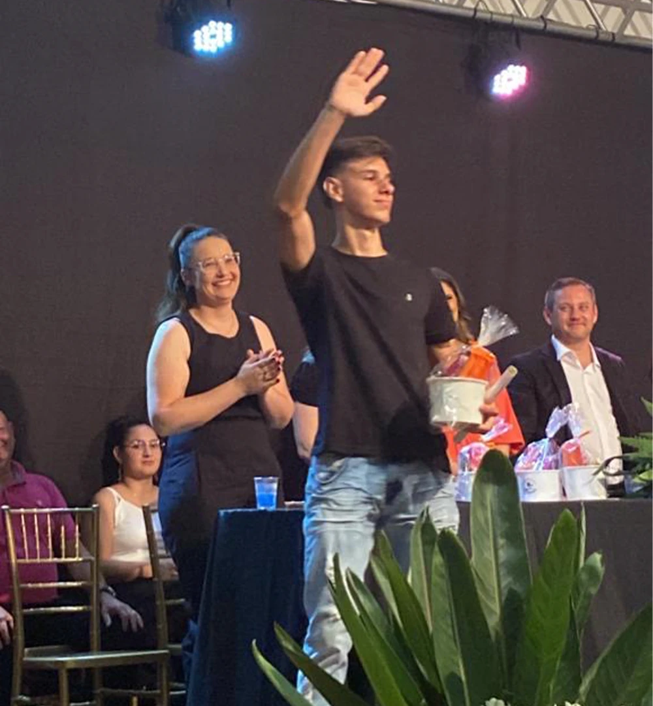

01. O Início
Criando minha própria autonomia
Minha trajetória acadêmica começou na Escola Estadual de Educação Básica Santos Dumont - Polivalente, mas foi na transição para a FEMA - Fundação Educacional Machado de Assis - que o jogo mudou. Cheguei com vontade de aprender, mas a realidade técnica me atingiu com força. Havia uma diferença de conhecimento.
Na 8ª série, a estabilidade financeira para meus estudos foi ameaçada. Estava muito claro: não havia recursos. Naquele momento, tomei a decisão que definiria meu perfil profissional: não terceirizar a responsabilidade. Comecei a trabalhar para custear minha própria matrícula até me formar no Ensino Fundamental.
